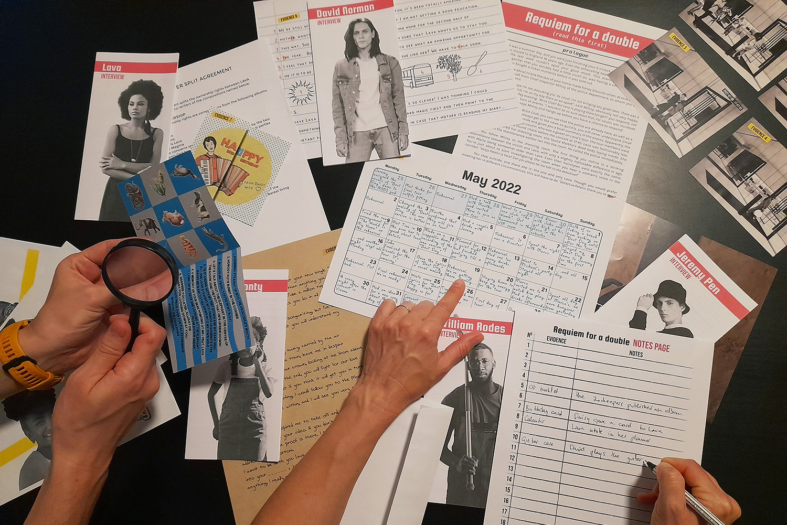

Zagreb is out of tune
AN OUTDOOR ESCAPE ROOM ADVENTURE
Travel to the beginning of the 20th century in this outdoor escape-room-style quest on the streets of Zagreb. Meet memorable Croatian historical figures and help them in a task to save the city from an unfortunate distress that suddenly spread among the city's inhabitants.
| GENRE | The game is an outdoor narrative puzzle game in which the puzzles are solved with the help of the elements found in different locations in Zagreb center. | |
| LANGUAGE | The game is available in English and Croatian. | |
| DURATION | It takes from one to two hours to finish the game. You can always take a break and continue later or finish it another day. | |
| NUMBER OF PLAYERS | We suggest a player count from two to four players for the best experience, but you can also play alone or in a bigger group. You can also install the accompanying app on multiple phones and follow the game progress simultaneously. | |
| GAME STRUCTURE | The game guides you to different locations where you will solve various puzzles. It also narrates a mistery that you will gradually unravel by playing the game. | |
| PUZZLES | The puzzles are solved by using the app and the objects you will see in the streets of Zagreb. | |
| DIFFICULTY | Some of the puzzles are slighly more difficult than the ones we encountered in similar games we have played, but this was very intentional since we believe that a typical outdoor escape game isn't challenging enough for puzzle games enthousiasts. However, the puzzles are still very approachable for begginers, and players can use hints during the entire game. | |
| GAME COMPONENTS | You will need a charged phone and an internet connection. Also, there is a component of the game that you can print out beforehand for a better experience, but a digital version of the document is included in the app. |
| GENRE | |
| The game is an outdoor narrative puzzle game in which the puzzles are solved with the help of the elements found in different locations in Zagreb center. | |
| LANGUAGE | |
| The game is available in English and Croatian. | |
| DURATION | |
| It takes from one to two hours to finish the game. You can always take a break and continue later or finish it another day. | |
| NUMBER OF PLAYERS | |
| We suggest a player count from two to four players for the best experience, but you can also play alone or in a bigger group. You can also install the accompanying app on multiple phones and follow the game progress simultaneously. | |
| GAME STRUCTURE | |
| The game guides you to different locations where you will solve various puzzles. It also narrates a mistery that you will gradually unravel by playing the game. | |
| PUZZLES | |
| The puzzles are solved by using the app and the objects you will see in the streets of Zagreb. | |
| DIFFICULTY | |
| Some of the puzzles are slighly more difficult than the ones we encountered in similar games we have played, but this was very intentional since we believe that a typical outdoor escape game isn't challenging enough for puzzle games enthousiasts. However, the puzzles are still very approachable for begginers, and players can use hints during the entire game. | |
| GAME COMPONENTS | |
| You will need a charged phone and an internet connection. Also, there is a component of the game that you can print out beforehand for a better experience, but a digital version of the document is included in the app. | |


Vanja Petelin cases
PLAY-AT-HOME PUZZLE MURDER MYSTERIES
Take on the role of the Slovenian private detective named Vanja Petelin in these play-at-home adventures. Your mission is to solve the crime put before you, by searching the crime scene for evidence, questioning the suspects, and solving the puzzles. Your final task is to find the culprit and prove once again that your reputation of being a master sleuth is justified.
| GENRE | The game is a detective game and a puzzle game, with both genres being equally present. | |
| LANGUAGE | The game is available only in English. | |
| DURATION | The game can take anything from two to four hours. It's imagined to be played in one or two sittings. | |
| NUMBER OF PLAYERS | We suggest a player count from one to four players for the best experience, but it's possible to play the game in a bigger group of five or six players. | |
| GAME STRUCTURE | The game is completely nonlinear. This means that players can divide tasks and each work on a different part of the game, or go through every part together, in any order they choose. The key to a successful win is communication between players. | |
| PUZZLES | The escape-room-style puzzles are integrated in the story, and the puzzles' solutions give important information in solving the case. | |
| DIFFICULTY | The game might be a challenge for beginners in the genre, but hints provide help in case the players get stuck. | |
| GAME COMPONENTS | You will get all the physical material in an envelope. You will also need to use this webpage to search the scene, enter puzzles' solutions, and submit your final answers. |
| GENRE | |
| The game is a detective game and a puzzle game, with both genres being equally present. | |
| LANGUAGE | |
| The game is available only in English. | |
| DURATION | |
| The game can take anything from two to four hours. It's imagined to be played in one or two sittings. | |
| NUMBER OF PLAYERS | |
| We suggest a player count from one to four players for the best experience, but it's possible to play the game in a bigger group of five or six players. | |
| GAME STRUCTURE | |
| The game is completely nonlinear. This means that players can divide tasks and each work on a different part of the game, or go through every part together, in any order they choose. The key to a successful win is communication between players. | |
| PUZZLES | |
| The escape-room-style puzzles are integrated in the story, and the puzzles' solutions give important information in solving the case. | |
| DIFFICULTY | |
| The game might be a challenge for beginners in the genre, but hints provide help in case the players get stuck. | |
| GAME COMPONENTS | |
| You will get all the physical material in an envelope. You will also need to use this webpage to search the scene, enter puzzles' solutions, and submit your final answers. | |